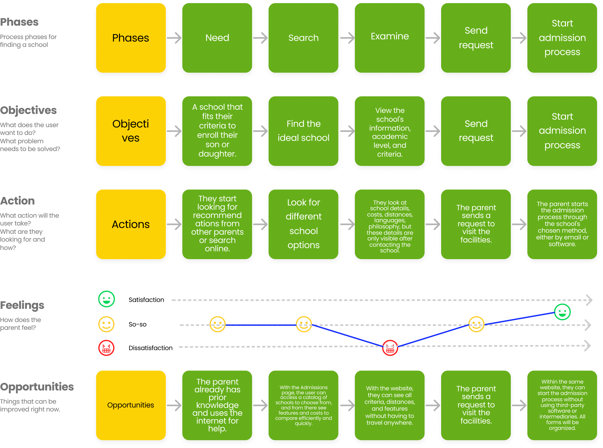
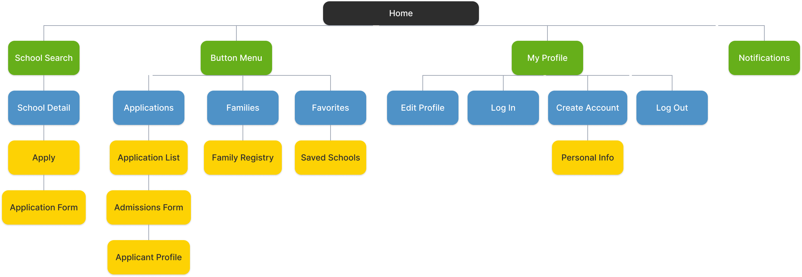

03 — Final Design
The product, fully designed

Homepage — school discovery and featured institutions

School search — filters by distance, fees, and academic level

School detail — complete information and admissions flow
A digital admissions product built end-to-end — from problem discovery to MVP launch — replacing paper-based school enrollment at private institutions across LATAM.
Overview
School management platform that helps parents find the ideal educational institution for their children based on their needs.
Business Objective
Develop an application with an educational marketplace and admissions platform to carry out and streamline the admissions process for applicants to educational institutions, while complying with design, user experience, and functionality guidelines.
01 — Research
The research methodology used to identify findings, insights, and ideas consisted of interviews with users, specifically five parents.
From the interviews, we gathered valuable information about what parents consider when searching for the ideal school based on their needs.
1
The distance from my home to the school is a very important factor.
2
The different fees should be well organized (enrollment, monthly tuition, transportation, cafeteria, uniforms, books, and supplies), since if there are hidden costs, it could discourage me from choosing that school.
3
The factors why I would choose a good school are: quality, a strong academic level, and that it is highly recommended.
4
The factors why I would choose a good school are: quality, a strong academic level, and that it is highly recommended.

User journey — parent experience searching for a school
02 — Information Architecture

Site map — platform structure and navigation hierarchy
03 — Final Design
Homepage — school discovery and featured institutions
School search — filters by distance, fees, and academic level
School detail — complete information and admissions flow